快速了解今年诺奖得主石黑一雄
昨天，2017年诺贝尔文学奖得主揭晓，日裔英国籍的小说家石黑一雄获奖，他的同胞村上春树继续陪跑，今年已是第八度失落奖项。此前春树得奖呼声依然颇高。据央广网报道，每一年，英国博彩网站“立博”Ladbrokes都会发布诺奖得主下注赔率排行榜，今年在榜单上，位于前三名的作家分别有肯尼亚作家提安哥，日本作家村上春树，加拿大作家玛格丽特·阿特伍德。
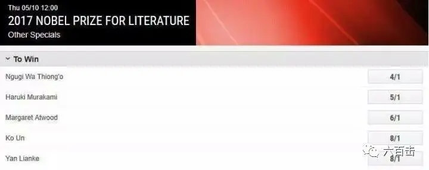
他在今年1月出版的新书《我的职业是小说家》中写道：一旦落选，就有许多人赶来看我，对我说：“这次太遗憾啦。不过下次绝对能得奖。下部作品请好好写啊！”我不知道该怎么回答才好。”希望春树继续坚持，像小李子一样早日修成正果。
而今年的得主石黑一雄有些冷门，名字都没有出现在博彩网上，可能比起春树来说，他具有多元文化思考和表达的优势吧。石黑一雄，是一位日裔英国籍的小说家。他生于日本长崎，1960年应其父亲的工作需要，石黑一雄全家移居英国，自此三十年后才重新到过日本。石黑一雄曾就学于东安格里亚大学和肯特大学。与鲁西迪、奈波尔被称为“英国文坛移民三雄”。
石黑一雄
他是当今英语世界最著名的作家之一，获得过四次布克奖提名，并最终凭借作品《长日将尽》在1989年获得此奖。他在2005年出版发行的小说《别让我走》被《时代周刊》评选为“2005年度十佳小说”和“1923年至2005年间百部优秀英语小说”。他的第七部小说，《被掩埋的巨人》于2015年正式发行。2008年，《泰晤士报》将石黑一雄列为“自1945年以来最伟大的英国作家榜”第32名。
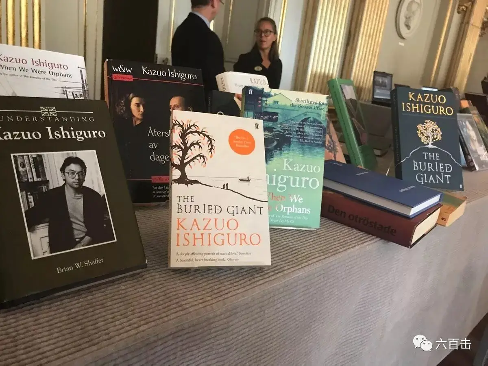
2017年因“在伟大情感的小说世界中，找到现实世界与虚幻深渊的连结”而获得该年度诺贝尔文学奖。我们今天就通过他代表作《长日将尽》改编的电影一起感受一下这位大师作品的魅力。电影1993年上映，由著名演员安东尼.霍普金斯主演，他此前因饰演《沉默的羔羊》而蜚声国际。
这是一部典型的英国文学电影，而导演詹姆斯.伊沃里最擅长表现英国中产阶级田园生活风味，他导演的“文学电影”部部都非常经典。本片曾获第66届奥斯卡最佳影片、导演James Ivory、男主角Anthony Hopkins、女主角Emma Thompson、艺术指导、服装设计、原创配乐、原著改编8项提名，并获第51届金球奖最佳影片（正剧类）、导演James Ivory、电影男主角Anthony Hopkins（正剧类）、电影女主角Emma Thompson（正剧类）、编剧5项提名。
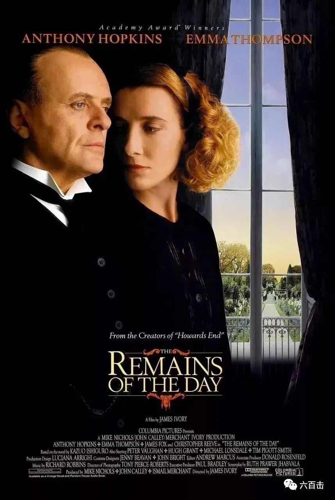
电影通过含蓄的手法刻画出小人物的心路历程，描述了一位公爵府邸之下两位仆人之间丝丝入扣的爱情故事。电影画面如油画一般精美，此片中的电影配乐更是非常动人，很精准的抓到了电影中两人之间的微妙情感，含蓄、优雅、节制的音乐之下隐藏的是主人公赤诚的情感。
画面非常美
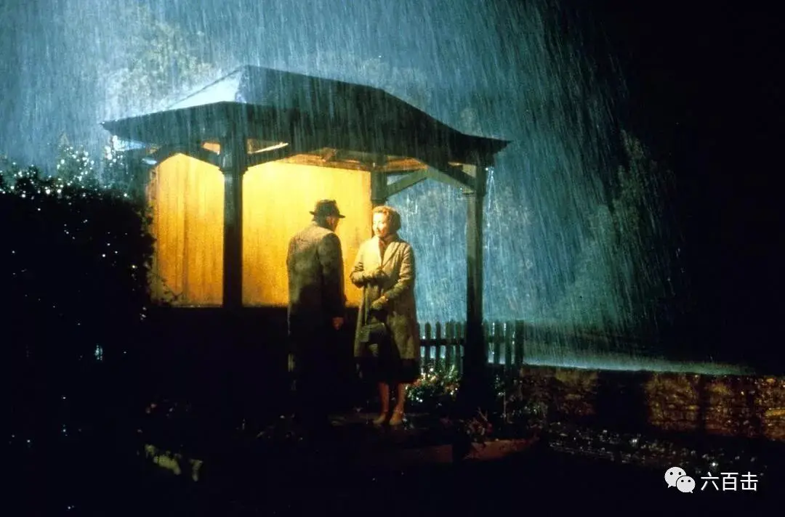
预告片
电影中演员的表演最为出彩，那个曾经凶残无比的汉尼拔在电影中变成了一个彬彬有礼、克尽职守的大管家史蒂芬斯先生，电影中刚开始的一个镜头，他将面包烤焦了，小心翼翼又很优雅的将面包藏在了自己的口袋中。
而他能够成为大管家，最重要的就是保持庄重，处乱不惊
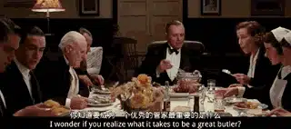
史蒂芬斯在工作上细致无比，就是餐桌上餐具的摆放都是用尺量过的
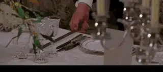
而电影中的女主是主管女仆的基顿，她并不妩媚，眉眼里透着的却是坚韧，心地善良敢于表达。基顿小姐刚开始显然对这个一板一眼的史蒂芬斯不是很开心
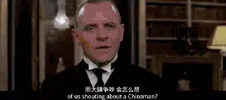
史蒂芬斯刚开始告诫基顿，之前的女管家因为和另一个仆人恋爱而私奔，告诫她最好不要像之前的女管家一样
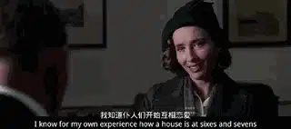
但是，史蒂芬斯显然对这个基顿小姐别有好感，在钥匙孔中偷看基顿小姐
1、史蒂芬斯与父亲
就这样，史蒂芬斯与基顿一起共事，史蒂芬斯做事一丝不苟，而他的老父亲更是在达林顿勋爵的公馆中做了一辈子的仆人，如今史蒂芬斯是他的父亲的主管，但是他并没有过多的体贴自己的父亲，对待父亲像是对待其他仆人一样，公事公办，给他的父亲安排了过于他年迈身躯所能承受的工作，而看在眼里的基顿小姐则无法接受，他指责了史蒂芬斯。
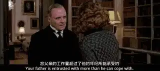
但是斯蒂芬斯并没有理会基顿的好意，果然，出现了意外，老父亲端着银器杯具绊倒在路上。
父亲摔伤后，史蒂芬斯并没有去关心他，只是和他“谈公事”，要改变老史蒂芬斯的工作内容
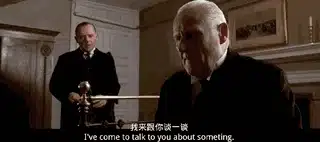
老父亲非常的倔强，并不接受这一安排，他独自一人在院子里锻炼端盘子的功夫
史蒂芬斯在窗户上眺望着自己的父亲，第一次，基顿小姐觉察出史蒂芬斯冰冷外表和言谈之下的热心，之后，史蒂芬斯的老父亲再次受伤，而且非常严重，正值一场很重要的宴会，一向以主家事情为大的史蒂芬斯无暇照顾自己的父亲，基顿小姐热心替他照顾
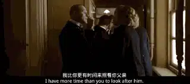
实际上，在宴会中的史蒂芬斯心急如焚，因为父亲的安危而坐立不安，霍普金斯表演的非常生动，他一直等待会议结束，当主家宣布会议结束，他正要冲出去看望父亲的时候，觉察到会议人群还没有完全结束，大家在鼓掌，这时他立马收回早已迈出去的双脚，正是这样“不敢越雷池一步”的谨慎预示着他和基顿之间的悲剧
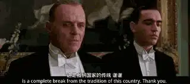
当他冲出去的时候，父亲在几分钟之前已经去世了
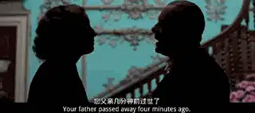
知道无缘见父亲最后一面后，斯蒂芬斯说要继续去忙，而他的一句话非常细腻的传达出他对孝敬父亲的让人心碎的想法，“我父亲肯定希望我把工作做好，我不能令他失望“
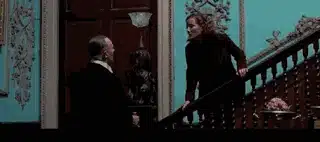
2、永远不把爱说出来的霍普金斯
在史蒂芬斯父亲事情上的处理，基顿知道斯蒂芬斯并非冷酷之人，也喜欢上了他。而基顿的善良也让史蒂芬斯爱上了她。但是这个一辈子严谨克制的史蒂芬斯已经太习惯于将内心的情感埋藏在最深的地方，他已经丧失了去表达、去追求的能力。而基顿小姐在情感表达上是勇敢的，第一次，基顿向史蒂芬斯示好，斯蒂芬斯含情脉脉的看着基顿
只差一个拥抱，但是斯蒂芬斯很本能的打住了自己的情感，告诉基顿请不要打扰我为数不多的属于自己的时间
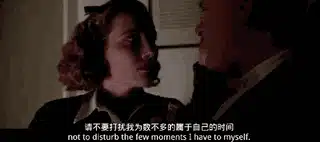
不多久，有另外一个男人追求基顿，而基顿还是心属斯蒂芬斯，基顿抱着最后的勇气表达了自己的爱意，告诉他，有人向我求婚了，这个场景演员将其中微妙的情感演绎的非常动人，也非常令人心碎
基顿一而再的给斯蒂芬斯机会，而基顿却都隐忍着自己的情感，
“有人向我求婚”
“我答应了，你怎么看”
“难道你没有话对我说么”
“我们一起共事这么多年，我把你的一切都告诉了他，包括你的生活习惯，你的风趣”
“你真的没有话对我说么”
令所有人遗憾的是，斯蒂芬斯“无视”了基顿所有的爱意
绝望的基顿辞职离开了斯蒂芬斯，远走他乡成为了别人的妻子
3、告别有情天——雨夜绝别
时光荏苒，20年后，霍普金斯收到基顿的信，信中只是平淡的提起往日一起工作的回忆，并没有爆发出任何的情感，但是霍普金斯很清楚其中的内涵，二人再次见面
霍普金斯依旧是冷静节制，基顿依旧端庄。雨夜中，霍普金斯在公交车站送别基顿，黄灯夜色下，这个最应该发生爱情的地方，最应该爆发情感的时刻，霍普金斯依旧没有说出口，将心理的爱意、浓浓思念化作车站道别的一句祝福。
也许，正是这最大的克制，蕴藏出最大的情感，也给了观众对于爱情最大的遐想
关注并回复： 长日将尽 获取电影资源
这里没有挑逗你眼目情欲的小鲜肉，也没有挑动你肉体情欲的段子
更没有膨胀你今生骄傲的鸡血。
我们只在乎那些最质朴真诚的作品，在那里我们才能恢复真正的想象力
我们也坚信这才是我们真正需要的。

个人微信号：six_hundreds_hits
因苹果公司规定，微信iOS 版赞赏功能关闭
如对本文表示支持，苹果设备用户可通过以下微信二维码赞赏